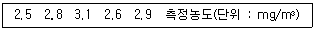
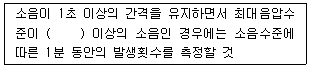
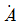
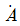
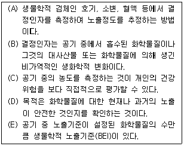

산업위생관리기사 (2010-03-07 기출문제)
1과목: 산업위생학개론
1. 다음 중 작업공정에 따라 발생 가능성이 가장 높은 직업성 질환을 올바르게 연결한 것은?
- 용광로 작업 – 치통, 부비강통, 이(耳)통
- 갱내 착암작업 – 전광성 안염
- 샌드 블래스팅(sand blasting) - 백내장
- 축전지 제조 – 납중독
(정답률: 94%)

2. 다음 중 직업성 암으로 최초 보고된 음낭암의 원인물질에 해당하는 것은?
- 검댕(soot)
- 납(lead)
- 수은(mercury)
- 카드뮴(cadmium)
(정답률: 93%)
3. 실내 환경의 오염물질 중 금속이 용해되어 액상 물질로 되고 이것이 가스상 물질로 기화된 후 다시 응축되어 발생하는 고체입자를 무엇이라 하는가?
- 에오로졸(aerosol)
- 흄(fume)
- 미스트(mist)
- 스모그(smog)
(정답률: 94%)
4. 다음 중 피로에 관한 설명으로 틀린 것은?
- 자율신경계의 조절기능이 주간은 부교감신경, 야간은 교감신경의 긴장 강화로 주간 수면은 야간 수면에 비해 효과가 떨어진다.
- 충분한 영양을 취하는 것은 휴식과 더불이 피로방지의 중요한 방법이다.
- 피로의 주관적 측정방법으로는 CMI(Control Medical Index)를 이용한다.
- 피로현상은 개인차가 심하여 작업에 대한 개체의 반응을 어디서부터 피로현상이라고 타각적 수치로 찾아내기는 어렵다.
(정답률: 76%)
5. 분진발생 공정에서 측정한 호흡성 분진의 농도가 다음과 같을 때 기하평균농도는 약 몇 mg/m3 인가?

- 2.62
- 2.77
- 2.92
- 3.03
(정답률: 83%)
6. 1일 8시간 작업시 기준치가 0.⑤ mg/m3 인 물질이 있다. 1일 10시간 작업할 경우 Brief와 Scala의 보정 방법으로 허용농도를 보정할 경우 보정된 기준치는 얼마인가?
- 0.025mg/m3
- 0.030mg/m3
- 0.035mg/m3
- 0.040mg/m3
(정답률: 68%)
7. 다음 중 재해예방의 4원칙에 해당하지 않는 것은?
- 손실 우연의 원칙
- 원인 조사의 원칙
- 예방 가능의 원칙
- 대책 선정의 원칙
(정답률: 78%)
8. 산소소비량 1L를 에너지량, 즉 작업대사량으로 환산하면 약 몇 kcal 인가?
- 5
- 10
- 15
- 20
(정답률: 53%)
9. 다음 중 산업위생의 목적과 가장 거리가 먼 것은?
- 작업자의 건강보호
- 작업환경의 개선
- 작업조건의 인간공학적 개선
- 직업병 치료와 보상
(정답률: 94%)
10. 다음 중 근육운동에 필요한 에너지를 생산하는 형기성 대사의 반응이 아닌 것은?
- glycogen + ADP ⇆ citrate + ATP
- ATP ⇆ ADP + P + free energy
- creatine phosphate + ADP ⇆ creatine + ATP
- glucose + P + ADP → Lactate + ATP
(정답률: 57%)
11. 다음 중 재해성 질병의 인정시 종합적으로 판단하는 사항으로 틀린 것은?
- 재해의 성질과 강도
- 재해가 작용한 신체부위
- 재해가 발생할 때까지의 시간적 관계
- 작업내용과 그 작업에 종사한 기간 또는 유해 작업의 정도
(정답률: 37%)
12. 다음 중 최대작업역에 대한 설명으로 옳은 것은?
- 작업자가 작업할 때 사지를 모두 이용하여 닿는 영역
- 작업자가 작업할 때 아래팔을 뻗어 닿는 영역
- 작업자가 작업할 때 상체를 기울여 손이 닿는 영역
- 작업자가 작업할 때 윗팔과 아래팔을 곧게 뻗어 닿는 영역
(정답률: 78%)
13. 미국정부산업위생전문가협의회(ACGIH)에서 권고하고 있는 허용농도 적용상의 주의사항이 아닌 것은?
- 대기오염 평가 및 관리에 적용하지 않도록 한다.
- 독성의 강도를 비교할 수 있는 지표로 사용하지 않도록 한다.
- 안전농도와 위험농도를 정확히 구분하는 경계선으로 이용하지 않도록 한다.
- 산업장의 유해조건을 평가하기 위한 지침으로 사용하지 않도록 한다.
(정답률: 76%)
14. 산업안전보건법상 유기화합물의 설비특례에 따라 사업주는 전체환기장치가 설치된 유기화합물 취급작업장으로서 밀폐설비 또는 국소배기장치를 설치하지 않을 수 있다. 다음 중 이에 해당되지 않는 경우는?
- 유기화합물의 노출기준이 100ppm 이상인 경우
- 유기화합물의 발생량이 대체로 균일한 경우
- 동일 작업장에 다수의 오염원이 분산되어 있는 경우
- 오염원이 고정된 경우
(정답률: 78%)
15. 다음 중 심리학적 적성검사에 해당하는 것은?
- 지각동작검사
- 감각기능검사
- 심폐기능검사
- 체력검사
(정답률: 79%)
16. 미국산업위생학술원(AAIH)이 채택한 윤리강령 중 기업주와 고객에 대한 책임에 해당하는 내용은?
- 성실성과 학문적 실력 면에서 최고 수준을 유지한다.
- 위험요소와 예방조치에 관하여 근로자와 상담한다.
- 궁극적 책임은 기업주와 고객보다 근로자의 건강보호에 있다.
- 일반 대중에 관한 사항은 정직하게 발표한다.
(정답률: 66%)
17. 다음 중 교대근무에 있어 야간작업의 생리적 현상으로 틀린 것은?
- 체중의 감소가 발생한다.
- 체온이 주간보다 올라간다.
- 주간수면의 효율이 좋지 않다.
- 주간 근무에 비하여 피로가 쉽게 온다.
(정답률: 88%)
18. 상시근로자수가 40명인 A 사업장에서 연간 4일 이상의 휴업재해가 15건이 발생하였다면 이 사업장의 도수율은 약 얼마인가? (단, 근로자는 1일 8시간씩, 연간 300일을 근무하였다.)
- 0.13
- 15.6
- 65.1
- 156.25
(정답률: 80%)
19. 다음 중 산업안전보건법상 보건관리자가 수행하여야 할 직무에 해당하지 않는 것은?
- 해당 사업장 안전교육계획의 수립 및 실시
- 건강장해를 예방하기 위한 작업관리
- 물질안전보건자료의 게시 또는 비치
- 직업성 질환 발생의 원인 조사 및 대책 수립
(정답률: 58%)
20. 다음 중 영상표시단말기(VDT) 취급 근로자의 작업자세로 적절하지 않은 것은?
- 팔꿈치의 내각은 90° 이상이 되도록 한다.
- 근로자의 발바닥 전면이 바닥면에 닿는 자세를 기본으로 한다.
- 무릎의 내각(KNEE ANGLE)은 90° 전후가 되도록 한다.
- 근로자의 시선은 수평선상으로부터 10~15° 위로 가도록 한다.
(정답률: 80%)
2과목: 작업위생측정 및 평가
21. 흡광광도계에서 빛의 강도가 i0인 단색광이 어떤 시료용액을 통과할 때 그 빛의 30%가 흡수될 경우, 흡광도는?
- 약 0.30
- 약 0.24
- 약 0.16
- 약 0.12
(정답률: 64%)
22. 코크스 제조공정에서 발생되는 코크스오븐 배출물질을 채취하려고 한다. 다음 중 가장 적합한 여과지는?
- 은막 여과지
- PVC 여과지
- 유리섬유 여과지
- PTFE 여과지
(정답률: 73%)
23. 누적소음노출량(D : %)을 적용하여 시간가중평균 소음수준(TWA : dB(A))을 산출하는 공식으로 옳은 것은?
- TWA = 16.61 log(D/100) + 80
- TWA = 19.81 log(D/100) + 80
- TWA = 16.61 log(D/100) + 90
- TWA = 19.81 log(D/100) + 90
(정답률: 84%)
24. 통계집단의 측정값들에 대한 균일성, 정밀성 정도를 표현하는 것으로 평균값에 대한 표준편차의 크기를 백분율로 나타낸 수치는?
- 신뢰한계도
- 표준분산도
- 변이계수
- 편차분산율
(정답률: 84%)
25. 다음은 소음 측정방법에 관한 내용이다. ( )안에 맞는 내용은? (단, 고시 기준)

- 110 dB(A)
- 120 dB(A)
- 130 dB(A)
- 140 dB(A)
(정답률: 76%)
26. 입자상 물지의 크기 표시 중 실제크기 직경을 나타내며 입자의 면적을 이등분하는 직경으로 과소평가의 위험성이 있는 것은?
- 페렛직경
- 스톡크직경
- 마틴직경
- 등면적직경
(정답률: 69%)
27. 작업환경 측정의 단위 표시로 옳지 않은 것은? (단, 고시 기준)
- 석면 농도 : 개/m3
- 소음 : dB(A)
- 고열(복사열 포함) : 습구흑구온도지수를 구하여 ℃로 표시
- 가스, 증기, 분진, 미스트 등의 농도 : mg/m3 또는 ppm
(정답률: 79%)
28. 유량, 측정시간, 회수율, 분석에 의한 오차가 각각 10%, 5%, 10%, 5% 일 때의 누적오차와 유량에 의한 오차를 5%로 감소(측정시간, 회수율, 분석에 의한 오차율은 변화없음)시켰을 때 누적오차와의 차이는?
- 약 1.8%
- 약 2.6%
- 약 3.4%
- 약 4.2%
(정답률: 68%)
29. 금속가공 작업장에서 펀칭기의 소음이 88dB(A), 프레스기의 소음이 93dB(A)이 발생할 때 두 소음의 합성음은?
- 93.6 dB(A)
- 94.2 dB(A)
- 95.6 dB(A)
- 96.2 dB(A)
(정답률: 77%)
30. 직경이 5μm, 비중이 1.8인 A물질의 침강 속도는?
- 0.115 cm/sec
- 0.135 cm/sec
- 0.245 cm/sec
- 0.275 cm/sec
(정답률: 70%)
31. 브롬화비닐(Vinyl bromide)을 사용하는 작업장의 예상농도가 0.44mg/m3이다. 채취하여야 할 최소한의 시간은? (단, 정량한계(LOQ)의 하한치가 7.8μg이고 시료채취펌프의 유량은 0.2L/min이다.)
- 66min
- 89min
- 124min
- 163min
(정답률: 57%)
32. 50% 벤젠, 20% 아세톤 그리고 30% 톨루엔의 중량비로 조성된 용제가 증발되어 작업환경을 오염시키고 있다. 이 때 각각의 TLV는 각각 30mg/m3 , 1780mg/m3 및 375mg/m3 이라면 이 작업장의 혼합물의 허용농도는? (단, 상가작용 기준)
- 37.2 mg/m3
- 49.6 mg/m3
- 56.9 mg/m3
- 62.8 mg/m3
(정답률: 67%)
33. 옥외(태양광선이 내리쬐는 장소)의 습구흑구온도지수(WBGT) 산출식은?
- (0.7×자연습구온도)+(0.2×건구온도)+(0.1×흑구온도)
- (0.7×자연습구온도)+(0.2×흑구온도)+(0.1×건구온도)
- (0.5×자연습구온도)+(0.3×건구온도)+(0.2×흑구온도)
- (0.5×자연습구온도)+(0.3×흑구온도)+(0.2×건구온도)
(정답률: 79%)
34. 3000mL의 0.002M의 황산용액을 만들려고 한다. 5M 황산을 이용할 경우 몇 mL가 필요한가?
- 0.6 mL
- 1.2 mL
- 1.8 mL
- 2.4 mL
(정답률: 59%)
35. 한 소음원에서 발생되는 음압실효치의 크기가 0.2N/m2인 경우 음압수준(sound pressure level)은?
- 80 dB
- 90 dB
- 100 dB
- 110 dB
(정답률: 56%)
36. 어느 작업장내의 공기 중 톨루엔(toluene)을 가스크로마토그래피 법으로 농도를 구한 결과 65.0 mg/m3 이었다면 ppm 농도는? (단, 25℃, 1기압 기준, 톨루엔(toluene)의 분자량 : 92.14)
- 17.3 ppm
- 37.3 ppm
- 122.4 ppm
- 246.4 ppm
(정답률: 65%)
37. 일산화탄소 1m3가 100,000m3의 밀폐된 차고에 방출되었다면 이 때 차고 내 공기 중 일산화탄소의 농도(ppm)는? (단, 방출 전 차고 내 일산화탄소 농도는 무시함)
- 0.1
- 1.0
- 10
- 100
(정답률: 45%)
38. 작업환경측정시 활성탄관에 흡착된 유기용제 물질(할로겐화 탄화수소류) 탈착에 일반적으로 사용되는 탈착용매는?
- CS2
- C6H6
- H2O
- CH2OH
(정답률: 74%)
39. 측정기구보정을 위한 2차 표준기구에 해당되는 것은?
- 오리피스미터
- 유리피스톤미터
- 폐활량계
- 가스치환병
(정답률: 78%)
40. 알고 있는 공기 중 농도를 만드는 방법인 Dynamic Method 의 장점으로 틀린 것은?
- 만들기가 간단하고 가격이 저렴하다.
- 소량의 누출이나 벽면에 의한 손실은 무시한다.
- 가스, 증기, 에어로졸 실험도 가능하다.
- 다양한 농도범위에서 제조 가능하다.
(정답률: 86%)
3과목: 작업환경관리대책
41. A 물질의 증기압이 70 mmHg 이라면 이때 포화증기농도는 몇 % 인가? (단, 표준상태 기준)
- 1.2%
- 3.2%
- 5.2%
- 9.2%
(정답률: 70%)
42. 원심력 송풍기 중 후향 날개형 송풍기에 관한 설명으로 옳지 않은 것은?
- 분진농도가 낮은 공기나 고농도 분진 함유 공기를 이송시킬 경우, 집진기 후단에 설치한다.
- 송풍량이 증가하면 동력도 증가하므로 한계 부하송풍기라고도 한다.
- 회전날개가 회전방향 반대편으로 경사지게 설계되어 있어 충분한 압력을 발생시킨다.
- 고농도 분진함유 공기를 이송시킬 경우 회전날개 뒷면에 퇴적되어 효율이 떨어진다.
(정답률: 42%)
43. 처리가스량 106 Nm3/h의 배기가스를 집진장치로 처리하는 경우의 송풍기의 소요 동력은? (단, 송풍기 유효전압 110mmH2O로 하고 송풍기의 효율을 80%로 한다.)
- 약 345 kW
- 약 355 kW
- 약 365 kW
- 약 375 kW
(정답률: 50%)
44. 공기 중에 사염화에틸렌이 100000ppm 존재하고 있다면 사염화에틸렌과 공기의 혼합물 유효비중은? (단, 사염화에틸렌 비중은 5.7, 공기비중은 1.0)
- 1.07
- 1.14
- 1.21
- 1.47
(정답률: 65%)
45. 어느 유체관을 흐르는 유체의 양은 220m3/min 이고 단면적이 0.5m2 일 때 속도압(mmH2O)은? (단, 유체의 밀도 1.21 kg/m3)
- 약 5.9
- 약 4.6
- 약 3.3
- 약 2.1
(정답률: 51%)
46. 작업환경관리의 원칙 중 대치에 관한 내용으로 가장 거리가 먼 것은?
- 단열재 유리섬유를 양면 또는 스티로폼 등으로 한다.
- 성냥 제조시에 황린 대신에 적린을 사용한다.
- 분체 입자를 큰 입자로 대치한다.
- 금속을 두드려서 자르는 대신 톱으로 자른다.
(정답률: 57%)
47. 작업장의 체적이 2000m3이고 공기 공급 전 작업장의 에틸벤젠의 농도는 300ppm이었다. 70m3/min의 작업장 밖의 공기를 내부로 유입시켜 작업장의 에틸벤젠 농도를 노출기준인 100ppm까지 감소시키는데 소용되는 시간은? (단, 유입공기 중 에틸벤젠의 농도는 0ppm이다.)
- 약 27.3분
- 약 29.7분
- 약 31.4분
- 약 33.8분
(정답률: 56%)
48. 후드로부터 0.25m 떨어진 곳에 있는 공정에서 발생되는 먼지를 제어속도는 5m/s, 후드직경 0.4m인 원형 후드를 이용하여 제거하고자 한다. 이 때 필요 환기량(m3/min)? (단, 프랜지 등 기타 조건은 고려하지 않음)
- 225
- 255
- 275
- 295
(정답률: 60%)
49. 사이크론의 설계시에 블로다운시스템(Blowdown system)을 설치하면 집진효율을 증가시킬 수 있다. 일반적으로 블로다운시스템에 적용되는 가스량은?
- 처리가스량의 1~5%
- 처리가스량의 5~10%
- 처리가스량의 10~15%
- 처리가스량의 15~20%
(정답률: 69%)
50. 금속을 가공하는 음압수준이 98dB(A)인 공정에서 NRR이 17인 귀마개를 착용한다면 차음효과는? (단, OSHA에서 차음효과를 예측하는 방법을 적용)
- 5 dB(A)
- 10 dB(A)
- 15 dB(A)
- 20 dB(A)
(정답률: 70%)
51. 개구면적이 0.5m2인 외부식 장방형 후드가 자유공간에 설치되어 포측점까지의 거리 0.4m, 제거속도 0.25m/s일 때의 필요송풍량과 이 후드를 테이블상에 설치하였을 경우의 필요송풍량과의 차이는?
- 8m3/min 감소
- 12m3/min 감소
- 16m3/min 감소
- 20m3/min 감소
(정답률: 40%)
52. 강제환기를 실시할 때 환기효과를 제고하기 위해 따르는 원칙으로 옳지 않은 것은?
- 공기배출구와 근로자의 작업위치 사이에 오염원이 위치하여야 한다.
- 오염물질 배출구는 가능한 한 오염원으로부터 가까운 곳에 설치하여 ‘점환기’ 현상을 방지한다.
- 배출공기를 보충하기 위하여 청정공기를 공급한다.
- 오염원 주위에 다른 작업공정이 있으면 공기배출량을 공급량보다 약간 크게 하여 음압을 형성하여 주위 근로자에게 오염물질이 확산되지 않도록 한다.
(정답률: 75%)
53. 덕트의 설치 원칙으로 틀린 것은?
- 덕트는 가능한 한 짧게 배치하도록 한다.
- 밴드의 수는 가능한 한 적게 하도록 한다.
- 가능한 한 후두의 가까운 곳에 설치한다.
- 공기 흐름이 원활하도록 상향구배로 만든다.
(정답률: 85%)
54. 어떤 공장에서 1시간에 4ℓ의 벤젠이 증발되어 공기를 오염시키고 있다. 전체환기를 위한 필요환기량(m3/s)은? (단, 안전계수=6, 분자량=78, 벤젠비중=0.879, 노출기준=10ppm, 21℃, 1기압 기준)
- 약 82
- 약 91
- 약 146
- 약 181
(정답률: 57%)
55. 호흡용 보호구에 관한 설명으로 가장 거리가 먼 것은?
- 방진마스크는 비휘발성 입자에 대한 보호가 가능하다.
- 방독마스크는 공기 중의 산소가 부족하면 사용할 수 없다.
- 방독마스크는 일시적인 작업 또는 긴급용으로 사용하여야 한다.
- 방독마스크는 면, 모, 합성섬유 등을 필터로 사용한다.
(정답률: 80%)
56. 덕트의 속도압이 20mmH2O, 후드의 압력손실이 12mmH2O일 때 후드의 유입계수는?
- 0.82
- 0.79
- 0.67
- 0.60
(정답률: 51%)
57. 보호장구의 재질과 적용화학물질에 관한 내용으로 틀린 것은?
- Butyl 고무는 극성용제에 효과적으로 적용할 수 있다.
- 가죽은 기본적인 찰과상 예방이 되며 용제에는 사용하지 못한다.
- 천연고무(latex)는 절단 및 찰과상 예방에 좋으며 수용성 용액, 극성 용제에 효과적으로 적용할 수 있다.
- Vitron은 구조적으로 강하며 극성용제에 효과적으로 사용할 수 있다.
(정답률: 70%)
58. 관내유속 1.25m/sec, 관직경 0.1m 일 때 Reynolds 수는? (단, 20℃, 1기압, 동점성계수는 1.5×10-5m2/sec)
- 6333
- 7333
- 8333
- 9333
(정답률: 66%)
59. 회전차 외경이 600mm인 레이디얼 송풍기의 풍량은 300m3/min, 송풍기 풍압은 60mmH2O, 축동력이 0.70kW이다. 회전차 외경이 1200mm인 상사인 레이디얼 송풍기가 같은 회전수로 운전된다면 이 송풍기의 풍량은? (단, 모두 표준공기를 취급한다.)
- 600 m3/min
- 800 m3/min
- 1600 m3/min
- 2400 m3/min
(정답률: 51%)
60. 전기집진장치의 장점으로 옳지 않은 것은?
- 회수가치성이 있는 입자 포집이 가능하다.
- 고온가스를 처리할 수 있다.
- 넓은 범위의 입경과 분진농도에 집진효율이 높다.
- 전압변동과 같은 조건변동에 쉽게 적응된다.
(정답률: 62%)
4과목: 물리적유해인자관리
61. 다음 중 제2도 동상의 증상으로 적절한 것은?
- 따갑고 가려운 감각이 생긴다.
- 수포를 가진 광범위한 삼출성 염증이 생긴다.
- 심부조직까지 동결하면 조직의 괴사와 괴저가 일어난다.
- 혈관이 확장하여 발적이 생긴다.
(정답률: 78%)
62. 다음 중 열경련의 증상과 대책으로 볼 수 없는 것은?
- 수의근의 경련이 발생한다.
- 중추신경계통에 장해가 유발된다.
- 식염수를 마시게 한다.
- 과도한 발한이 발생된다.
(정답률: 65%)
63. 다음 중 레이저광의 노출량을 평가하는데 알아야 할 사항으로 틀린 것은?
- 각만 표면에서의 조사량(J/cm2) 또는 노출량 (W/cm2)을 측정한다.
- 레이저광과 같은 직사광과 형광등 또는 백열등과 같은 확산광은 구별하여 사용해야 한다.
- 레이저광에 관한 눈의 허용량은 그 파장에 따라 수정되어야 한다.
- 조사량의 서한도는 1cm 구경에 대한 평균치이다.
(정답률: 49%)
64. 등청감곡선에 의하면 인간의 청력은 저주파 대역에서 둔감한 반응을 보인다. 따라서 작업현장에서 근로자에게 노출되는 소음을 측정할 경우 저주파 대역을 보정한 청감보정회로를 사용해야 하는데 이 때 적합한 청감보정회로는 무엇인가?
- Plat 특성
- C 특성
- B 특성
- A 특성
(정답률: 66%)
65. 전리방사선의 단위 중 rem 에 대한 설명으로 가장 적절한 것은?
- X선과 γ선의 노출선량, 즉 전기량을 운반하는 선량을 나타낸다.
- 단위시간에 일어나는 방사선의 붕괴율을 의미한다.
- 조직 또는 물질의 단위질량당 흡수된 에너지를 표시한다.
- 흡수선량이 생체에 영향을 주는 정도로 표시하는 단위이다.
(정답률: 44%)
66. 다음 중 전리방사선과 비전리방사선의 경계가 되는 에너지 강도로 가장 적절한 것은?
- 약 1200eV
- 약 120eV
- 약 12eV
- 약 1.2eV
(정답률: 75%)
67. 다음 중 진동 발생원에 대한 대책으로 적절하지 않은 것은?
- 진동원의 제거
- 진동 방지 장갑의 사용
- 방진재료의 사용
- 저진동 기계로 교체
(정답률: 52%)
68. 다음 중 감압병의 예방 및 치료에 관한 설명으로 옳은 것은?
- 고압환경에서 작업할 때는 질소를 헬륨으로 대치한 공기를 호흡시키도록 한다.
- 잠수 및 감압방법에 익숙한 사람을 제외하고는 1분에 20m씩 잠수하는 것이 안전하다.
- 정상기압보다 1.25기압을 넘지 않는 고압환경에 장시간 노출되었을 때에는 서서히 감압시키도록 한다.
- 감압병의 증상이 발생하였을 때에는 인공적 산소고압실에 넣어 산소를 공급시키도록 한다.
(정답률: 62%)
69. 다음 중 빛과 밝기의 단위에 관한 설명으로 틀린 것은?
- 반사율은 조도에 대한 휘도의 비로 표시한다.
- 광원으로부터 나오는 빛의 양을 광속이라고 하며 단위는 루멘을 사용한다.
- 광원으로부터 나오는 빛의 세기를 광도라고 하며 단위는 칸델라를 사용한다.
- 입사면의 단면적에 대한 광도의 비를 조도라 하며 단위는 촉광을 사용한다.
(정답률: 58%)
70. 자외선 중 소독작용을 비롯하여 비타민 D 형성, 피부에 색소침착 등 생물학적 작용이 강한 Dorno선의 파장으로 옳은 것은?
- 2000~2500

- 2800~3150

- 3000~4500

- 4000~4800

(정답률: 77%)
71. 다음 중 소음성 난청에 영향을 미치는 요소의 설명으로 옳지 않은 것은?
- 음압수준은 높을수록 유해하다.
- 저주파음이 고주파음보다 더욱 유해하다.
- 간헐적 노출이 계속적 노출보다 덜 유해하다.
- 소음에 노출된 모든 사람이 똑같이 반응하지 않으며 감수성이 매우 높은 사람이 극소수 존재한다.
(정답률: 68%)
72. A 작업장의 음압수준이 100dB(A)이고, 근로자는 귀덮개(NRR=18)를 착용하고 있다. 현장에서 근로자가 노출되는 음압수준은 약 얼마인가? (단, OSHA 의 계산방법을 사용한다.)
- 92.5 dB(A)
- 94.5 dB(A)
- 96.5 dB(A)
- 98.5 dB(A)
(정답률: 67%)
73. 다음 중 저(低)산소상태에서 산소분압의 저하에 의하여 발생되는 질환으로 옳은 것은?
- CO poison
- Caison disease
- Oxygen poison
- Hypoxia
(정답률: 67%)
74. 자유공간에서의 소음원과 음압수준에 있어 거리가 2배 증가하면 음압수준은 얼마나 감소하는가?
- 2dB
- 3dB
- 4dB
- 6dB
(정답률: 67%)
75. 소음에 대한 누적·노출량계로 3시간 측정한 값이 60%이었다. 이때의 측정시간 동안의 소음평균치는 약 얼마인가?
- 85.3 dB(A)
- 88.3 dB(A)
- 93.4 dB(A)
- 96.4 dB(A)
(정답률: 40%)
76. 감압에 따르는 조직내 질소기포 형성량에 영향을 주는 요인인 조직에 용해된 가스량을 결정하는 인자로 가장 적절한 것은?
- 감압 속도
- 혈류의 변화정도
- 노출정도와 시간 및 체내 지방량
- 폐내의 이산화탄소 농도
(정답률: 51%)
77. 다음 중 고압환경에서 발생할 수 있는 화학적인 인체작용이 아닌 것은?
- 질소마취작용에 의한 작업력 저하
- 산소중독증상으로 간질 모양의 경련
- 이산화탄소 분압증가에 의한 동틍성 관절 장애
- 일산화탄소 중독에 의한 호흡곤란
(정답률: 77%)
78. 다음 중 전신진동이 생체에 주는 영향에 관한 설명으로 틀린 것은?
- 전신진동의 영향이나 장해는 중추신경계 특히 내분비계통의 만성작용에 관해 잘 알려져 있다.
- 말초혈관이 수축되고 혈압상승, 맥박증가를 보이며 피부 전기저항의 저하도 나타낸다.
- 산소소비량은 전신진동으로 증가되고 폐환기도 촉진된다.
- 두부와 견부는 20~30Hz 진동에 공명하며, 안구는 60~90Hz 진동에 공명한다.
(정답률: 33%)
79. 다음 중 옥외에서의 습구흑구온도지수(WBGT)를 구하는 식으로 옳은 것은? (단, NWT는 자연습구온도, GT는 흑구온도, DT는 건구온도라 한다.)
- WBGT = 0.7NWT + 0.3GT
- WBGT = 0.1NWT + 0.7GT + 0.2DT
- WBGT = 0.2NWT + 0.7GT + 0.1DT
- WBGT = 0.7NWT + 0.2GT + 0.1DT
(정답률: 82%)
80. 다음 중 자연조명을 이용할 때 고려해야 할 사항으로 적합하지 않은 것은?
- 북쪽 광선은 일(日) 중 조도의 변동이 작고, 균등하여 눈의 피로가 적게 발생할 수 있다.
- 창의 자연 채광량은 광원면의 창으롤부터의 거리와 창의 대소 및 위치에 따라 달라진다.
- 보통 조도는 창의 높이를 증가시키는 것보다 창의 크기를 증가시키는 것이 효과적이다.
- 바닥 면적에 대한 유리창의 면적은 보통 1/5 ~ 1/6 이 적합하나 실내 각 점의 개각에 따라 달라질 수 있다.
(정답률: 61%)
5과목: 산업독성학
81. 다음 중 크롬에 관한 설명으로 틀린 것은?
- 6가 크롬은 발암성물질이다.
- 주로 소변을 통하여 배설된다.
- 형광등 제조, 치과용 아말감 산업이 원인이 된다.
- 만성 크롬중독인 경우 특별한 치료방법이 없다.
(정답률: 75%)
82. 다음 중 카드뮴의 인체 내 축적기관으로만 나열된 것은?
- 뼈, 근육
- 간, 신장
- 혈액, 모발
- 뇌, 근육
(정답률: 73%)
83. 다음 중 입자의 호흡기계 축적기전이 아닌 것은?
- 충돌
- 차단
- 변성
- 확산
(정답률: 80%)
84. 다음 중 납중독에 대한 치료방법의 일환으로 체내에 축적된 납을 배출하도록 하는데 사용되는 것은?
- Ca-EDTA
- DMPS
- Atropin
- 2-PAM
(정답률: 86%)
85. 다음 중 화학적 질식성 가스로만 나열된 것은?
- 이산화탄소, 아산화질소
- 메탄, 탄산가스
- 아황산가스, 암모니아
- 일산화탄소, 황화수소
(정답률: 68%)
86. 다음 중 화기에 의하여 분해되면 유독성의 포스겐이 발생하여 폐수종을 일으킬 수 있는 유기용제는?
- 벤젠
- 크실렌
- 염화에틸렌
- 노말헥산
(정답률: 50%)
87. 직업병의 유병율이란 발생율에서 어떠한 인자를 제거한 것인가?
- 장소
- 기간
- 질병종류
- 집단수
(정답률: 57%)
88. 다음 중 미국정부산업위생전문가협의회(ACGIH)의 노출기준(TLV) 적용에 관한 설명으로 틀린 것은?
- 산업위생전문가에 의하여 적용되어야 한다.
- 기존의 질병을 판단하기 위한 척도이다.
- 독성의 강도를 비교할 수 있는 지표가 아니다.
- 대기오염의 정도를 판단하는데 사용해서는 안 된다.
(정답률: 67%)
89. 다음 보기는 노출에 대한 생물학적모니터링에 관한 설명이다. 보기 중 틀린 것으로만 조합된 것은?

- (A), (B), (C)
- (A), (C), (D)
- (B), (C), (E)
- (B), (D), (E)
(정답률: 62%)
90. 다음 중 금속 증기열에 관한 설명으로 틀린 것은?
- 주로 베릴륨, 크롬, 주석 등이 원인이 된다.
- 철폐증은 철 분진 흡입시 발생되는 금속열의 한 형태이다.
- 감기와 증상이 비슷하며, 하루가 지나면 점차 완화된다.
- 월요일열(monday fever)이라고도 한다.
(정답률: 47%)
91. 다음 중 폐포에 가장 잘 침착하는 분진의 크기는?
- 0.01 ~ 0.5μm
- 0.5 ~ 5.0μm
- 5 ~ 10μm
- 10 ~ 20μm
(정답률: 64%)
92. 중금속 취급에 의한 직업성 질환을 나타낸 것으로 서로 관련이 가정 적은 것은?
- 납 중독 – 골수침입, 빈혈, 소화기장해
- 수은 중독 – 구내염, 수전증, 정신장해
- 망간 중독 – 신경염, 신장염, 중추신경장해
- 니켈 중독 – 백혈병, 재상불량성 빈혈
(정답률: 69%)
93. 독성물질의 생체과정인 흡수, 분포, 생전환, 배설 등의 변화를 일으켜 독성이 낮아지는 길항작용의 종류로 적절한 것은?
- 화학적 길항작용
- 기능적 길항작용
- 배분적 길항작용
- 수용체 길항작용
(정답률: 74%)
94. 방향족 탄화수소 중 급성 전신중독을 유발하는데 독성이 가장 강한 물질은?
- 벤젠
- 크실렌
- 톨루엔
- 스타이렌
(정답률: 70%)
95. 중독 증상으로 파킨슨 증후군 소견이 나타날 수 있는 중금속은?
- 납
- 카드뮴
- 비소
- 망간
(정답률: 81%)
96. 다음 중 “니트로벤젠”의 화학물질의 영향에 대한 생물학적 모니터링 대상으로 옳은 것은?
- 혈액에서의 메타헤로글로빈
- 요에서의 마뇨산
- 요에서의 저분자량 단백질
- 적혈구에서의 ZPP
(정답률: 54%)
97. 수치로 나타낸 독성의 크기가 각각 2 와 5 인 두 물질이 화학적 상호작용에 의해 상대적 동성이 9 로 상승하였다면 이러한 상호작용을 무엇이라 하는가?
- 상가작용
- 상승작용
- 가승작용
- 길항작용
(정답률: 74%)
98. 다음 중 무기성분진에 의한 진폐증에 해당하는 것은?
- 면폐증
- 규폐증
- 농부폐증
- 목재분진폐증
(정답률: 82%)
99. 다음 중 조혈장기에 장해를 입히자 않는 물질은?
- 벤젠
- TNT
- 망간
- 납
(정답률: 62%)
100. 다음 중 사람에 대한 안전용량(SHD)을 산출하는데 필요하지 않은 항목은?
- 독성량(TD)
- 안전인자(SF)
- 사람의 표준 몸무게
- 실험독성물질에 대한 역치(ThD0)
(정답률: 59%)